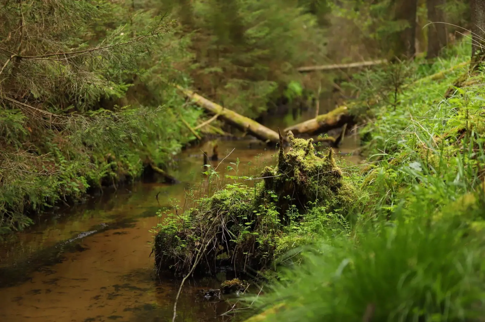

Czyste jeziora lobeliowe, labirynty leśnych duktów i spływy Brdą oraz Wdą bez pośpiechu. Slow travel po Borach Tucholskich — zielonym oceanie północnej Polski.
Dlaczego Bory Tucholskie inaczej
Bory Tucholskie to jeden z największych zwartych kompleksów leśnych w Europie Środkowej, a zarazem Rezerwat Biosfery UNESCO, w którym natura dyktuje własne reguły. Zamiast zgiełku kurortów znajdziesz tu sosnowe lasy, pradoliny rzeczne wyżłobione przez lodowiec oraz dziesiątki ukrytych jezior. W powietrzu unosi się zapach żywicy i mchu, który koi zmysły i pozwala odetchnąć pełną piersią. Nocne niebo zachwyca tu głęboką ciemnością pozbawioną miejskiej łuny.
Slow travel w Borach Tucholskich to świadome zwolnienie tempa i powrót do bliskiego kontaktu z naturą. To rezygnacja z pośpiechu na rzecz wędrowania leśnymi traktami, porannej kąpieli w czystej toni jeziora lobeliowego i wsłuchiwania się w szum wiekowych sosen. Niezależnie od tego, czy wybierzesz spływ kajakiem, trasę Kaszubskiej Marszruty, czy spacer na grzyby, bory oferują rzadkie poczucie wolności, przestrzeni i głębokiego wyciszenia.
Co zobaczyć
Bory Tucholskie rozciągają się na pograniczu Pomorza i Kujaw, obejmując dorzecza Brdy i Wdy, park narodowy oraz kilka parków krajobrazowych. Aby docenić ich różnorodność, warto podzielić pobyt na wodne szlaki, rezerwaty przyrody oraz lokalne dziedzictwo Borowiaków.
Wodne szlaki i rzeki
- Spływ rzeką Brdą — jeden z najpiękniejszych szlaków kajakowych w kraju. Na odcinku ze Swornychgaci przez Rytel do Woziwody rzeka wije się łagodnie wśród lasów, tworząc piaszczyste bystrza i malownicze meandry.
- Dolina rzeki Wdy — zwana Czarną Wodą, płynie leniwym nurtem przez Wdecki Park Krajobrazowy. Jej brzegi porastają wiekowe dęby i sosny, a czysta toń sprzyja niespiesznemu wiosłowaniu.
- Akwedukt w Fojutowie — niezwykły zabytek hydrotechniki z XIX wieku, wzorowany na rzymskich akweduktach. Wielki Kanał Brdy krzyżuje się tu bezkolizyjnie z płynącą dołem Czerską Strugą.
- Jezioro Charzykowskie i Karsińskie — kolebka polskiego żeglarstwa. Poza głównym portem w Charzykowach znajdziesz tu ustronne zatoki, trzcinowiska i kameralne pomosty idealne o zachodzie słońca.
Cuda przyrody i rezerwaty
- Jeziora lobeliowe — unikalne akweny o niezwykłej przezroczystości wody, takie jak Wielkie Gacno. Nazwa pochodzi od reliktowej rośliny lobelii jeziornej, a woda ma miękki charakter.
- Rezerwat Cisy Staropolskie w Wierzchlesie — najstarszy rezerwat w Polsce, chroniący największe naturalne skupisko cisów w Europie. Niektóre okazy liczą sobie kilkaset lat.
- Ścieżka dydaktyczna Jelenia Wyspa — urokliwa trasa piesza w Nadleśnictwie Woziwoda, prowadząca przez bory bagienne, torfowiska oraz wzdłuż Strugi Siedmiu Jezior.
- Dolina Rzeki Kulawy — ostoja dzikiej przyrody ze ścieżką edukacyjną wzdłuż potoku, gdzie spotkać można bobry, wydry oraz rzadkie ptaki wodne.
Tradycja i kultura borowiacka
- Swornegacie — wieś z Kaszubskim Domem Rękodzieła Ludowego, gdzie można podziwiać tradycyjne hafty, wyroby garncarskie i plecionki z korzenia sosny.
- Muzeum w Chojnicach — zlokalizowane w zabytkowej Bramie Człuchowskiej, prezentujące zbiory kultury materialnej Borowiaków Tucholskich.
- Wioska Chlebowa w Janówku — tematyczna wieś, gdzie według tradycyjnych receptur wypieka się chleb na zakwasie w piecach chlebowych.
- Muzeum Borów Tucholskich w Tucholi — ekspozycje ukazujące dawne leśnictwo, bartnictwo, życie codzienne borowiackich rodzin oraz historię regionu.
Kiedy jechać
- Maj i czerwiec — wymarzony czas dla miłośników ptasich treli i soczystej zieleni. Dni są najdłuższe, a rzeki i jeziora są jeszcze wolne od tłumów.
- Wrzesień i październik — złota jesień i raj dla grzybiarzy. Bory słyną z obfitości borowików i maślaków, a o świcie po lasach niesie się rykowisko jeleni.
- Lipiec i sierpień — pora ciepłej wody i słonecznych dni, wprost stworzona do kąpieli i spływów kajakowych. Warto wyruszać wcześnie rano.
- Zima — czas spokoju i baśniowych krajobrazów. Ośnieżone leśne dukty zamieniają się w trasy dla narciarzy biegowych, a mroźne powietrze przynosi rześkość.
Jak dotrzeć
- Samochodem: wygodny dojazd z Trójmiasta autostradą A1 i trasą DK22 (~1,5 godziny), z Bydgoszczy drogą DK25 (~1 godzina) lub z Poznania (~2,5 godziny).
- Pociągiem: stacje węzłowe w Chojnicach, Czersku i Tucholi zapewniają połączenia regionalne i dalekobieżne z Bydgoszczy, Trójmiasta i Piły.
- Rowerem: sieć tras Kaszubska Marszruta to ponad 200 km utwardzonych dróg rowerowych, które łączą stacje z najciekawszymi zakątkami lasu.
Na miejscu najlepiej sprawdza się rower lub kajak. Wiele osad leży z dala od głównych szos, a dukty leśne są wymarzoną scenerią do cichego podróżowania.
Ile czasu potrzebujesz
Weekend (2 dni) pozwala na zasmakowanie klimatu borów — jeden dzień warto przeznaczyć na spływ Brdą, a drugi na wycieczkę rowerową szlakiem jezior.
Trzy do czterech dni to optymalny czas na pełną regenerację. Zobaczysz akwedukt w Fojutowie, popłyniesz Wdą, odwiedzisz cisy w Wierzchlesie i wypoczniesz nad wodą.
Tydzień pozwala na prawdziwą ucieczkę od cywilizacji. Umożliwia przepłynięcie długiego szlaku kajakowego, poznanie Kaszubskiej Marszruty i borowiackiej kultury.
Co zjeść i gdzie spać
- Ryby słodkowodne — sielawa, sieja, lin i szczupak z lokalnych jezior, smażone na maśle lub serwowane w zalewie octowej.
- Borowiacki szandar — sycąca zapiekanka z tartych ziemniaków z boczkiem, majerankiem i cebulą, pieczona na złocisty kolor.
- Miód wrzosowy i leśny — tradycyjne miody z pasiek rozstawianych na rozległych borowiackich wrzosowiskach.
- Zupa z leśnych grzybów — aromatyczna zupa przygotowywana na wywarze z suszonych borowików z domowymi kluskami.
- Jagody i borówki — świeże jagodzianki borowiackie oraz tradycyjne ciasta drożdżowe z owocami leśnymi.
Bazy noclegowe: leśniczówki i agroturystyki w Swornychgaciach, Charzykowach, Rytlu i okolicach Tucholi. Znakomitym wyborem są drewniane domki w głębi lasu oraz kameralne pola namiotowe.
Praktyczne wskazówki
- Mapy offline — w gęstym lesie zasięg telefonii bywa znikomy. Pobierz wcześniej mapy na telefon lub miej przy sobie tradycyjną mapę papierową.
- Ochrona przed kleszczami — wilgotne runo leśne to siedlisko kleszczy. Pamiętaj o długich spodniach i skutecznych repelentach.
- Zasady rezerwatów — w parku narodowym i rezerwatach poruszaj się wyłącznie wyznaczonymi ścieżkami; biwakowanie na dziko jest zabronione.
- Bezpieczeństwo na wodzie — podczas spływów zawsze zakładaj kamizelkę asekuracyjną i zabezpiecz ekwipunek w workach wodoszczelnych.
- Rower trekkingowy lub gravel — piaszczyste dukty leśne wymagają szerszych opon; rower szosowy nie sprawdzi się poza asfaltem.
- Zasada Leave No Trace — zabieraj wszystkie odpadki ze sobą i zachowaj ciszę, pamiętając, że w lesie jesteś gościem dzikiej przyrody.